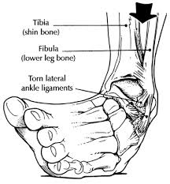
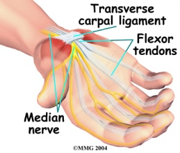
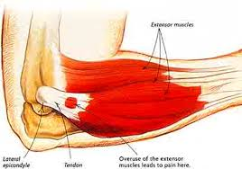
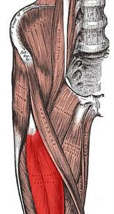
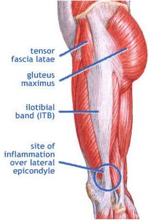
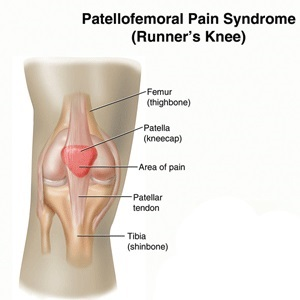
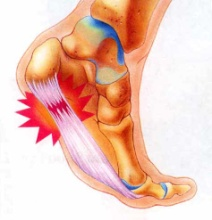
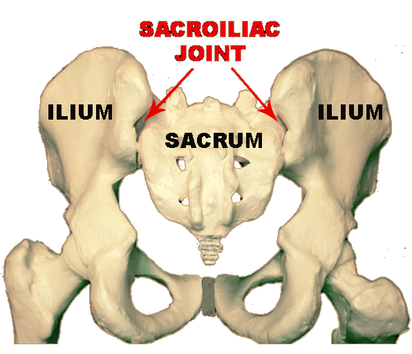
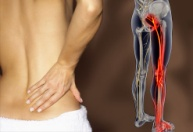
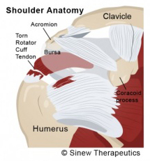

Conditions
We care for patients with a wide array of conditions. Below are brief descriptions of how we manage just a few of the MANY problems we routinely treat successfully. Don’t see your problem here and wonder if we can help? Send us an email at mailmanager@westportchiro.com and a doctor will answer you promptly.
- Ankle Sprain
- Carpal Tunnel Syndrome
- Golfer's/Tennis Elbow
- Hip Flexor Syndrome
- Iliotibial Band Syndrome
- Low Back Pain
- Neck Pain/Headaches
- Patellofemoral Pain Syndrome (Front of the Knee Pain)
- Plantar Fasciitis
- Sacroiliac Joint Pain
- Sciatica
- Shoulder Conditions
Ankle Sprain

Most know to rest, ice, compress, and elevate the area following an ankle sprain to control
swelling and inflammation in the area. Less well known but even more important is joint
movement dysfunction and scarring that occur with most ankle sprains.
Most ankle sprains happen when the ankle rolls in with the toes down, partially tearing the
ligaments on the outside of the ankle. The body patches the “hole” in the
ligament with scar tissue that is weaker, less flexible and more pain sensitive than healthy
ligament leaving it vulnerable to ongoing pain and repeated sprains. The forced inversion
(rolling in) of the ankle also often forces the top bone of the foot, the talus, forward and
out where it becomes stuck, again contributing to ongoing pain and leaving the ankle “half
sprained” until the problem is corrected. We offer advanced soft tissue treatments
like Active
Release Technique and Graston Technique to
break down the scar tissue and encourage the growth of normal, healthy ligaments. Specific
chiropractic adjustments to the ankle restore normal joint movement leaving the joint
strong, stable and flexible.
Carpal Tunnel Syndrome

CARPAL TUNNEL SYNDROME is a problem with a nerve in the arm that controls part of the palm,
thumb, index and middle fingers. The nerve travels a difficult obstacle course from the neck
down to the fingers. It has to pass safely between the bones of the cervical spine (neck),
between the neck muscles, under the collar bone, through the shoulder muscles, through the
arm and elbow muscles, under the wrist ligament that forms the ceiling of the “carpal
tunnel” and finally into the hand. At any one of those places along that obstacle
course, joint
movement dysfunction (stuck joints) or muscle
movement dysfunction (tight or weak muscles) caused by overuse can pull,
pinch or rub on the nerve causing numbness, tingling and weakness in the hand. Proper
treatment starts with chiropractic adjustment to free stuck joints in the neck, shoulder,
elbow and/or wrist. Then advanced soft tissue treatments like Active
Release Technique and Graston Technique
break up scar tissue and adhesion freeing the nerve to function and feel normal
again.
Golfer's/Tennis Elbow

These are essentially the same condition the only difference being tennis elbow is felt on
the outside and golfer’s elbow on the inside of the elbow. Both come from repetitive
overuse of the muscles that bend the wrist and hand forward (golfer’s elbow) or
backward (tennis elbow). The overuse causes microtears in the tendons that insert on the
bone bumps on the inside and outside of the elbow. The tendon becomes inflamed and scar
tissue is laid down in place of the tears to ‘patch up’ the area. The scar
tissue binds and restricts these tendons, causing further stress on the tissues. Home care
instruction is sometimes enough to solve mild cases. More severe cases need advanced soft
tissue treatments like Active Release Technique
and/or Graston Technique to break down the
scarring. It is rare to find a case that does not also involve joint
movement dysfunction in some combination of the wrist, elbow or cervical
spine (neck) that needs correction with specific chiropractic adjustments. With the right
treatment combination, most cases respond very well.
Hip Flexor Syndrome

Three of the major muscles that “flex” or bend the hip forward are the iliacus,
the psoas and the rectus femoris. These muscles get short and tight from prolonged sitting,
biking, kayaking, etc. When these muscles remain short and contracted over time, scar
tissue builds up in the areas of tightness. This can cause pain and/or a snapping at
the front of the hip and thigh. Psoas attaches to all the bones of the lower spine and
often causes low back pain also. Advanced soft tissue treatments like Active
Release Technique and Graston Technique
break up the scar tissue and adhesion in the hip flexor muscles. Specific adjustments
correct joint
movement dysfunction in the low back and hips that often accompanies the
muscle problems. Simple home exercises complete the correction.
Iliotibial Band Syndrome

The iliotibial band (ITB) is a long strap of fibrous tissue stretching from the top of the
hip to the outside of the knee. ITB Syndrome is a painful irritation of this fibrous band.
It most often occurs in those who perform repetitive leg movements, like runners or
cyclists, although anyone can be affected. Examination usually finds some combination of
Joint Movement Dysfunction (JMD)
in the pelvis, hip or knee, and Muscle Movement Dysfunction (MMD) in the
hip muscles. When treated with a combination of specific adjustments to restore joint motion
and Active Release Technique (ART) or
Graston
Technique to release tight muscles, pain usually goes away
and normal function returns.
Low Back Pain
Low back pain is the most common reason patients seek chiropractic care. Low back pain is most commonly caused by a combination of joint movement dysfunction or “stuck joints” and tight muscles in the low back. It is often complicated by weak core muscles and bad posture/movement habits. We offer the magic combination of:
- specific adjustments to correct the joint movement dysfunction,
- advanced soft tissue treatments (Active Release Technique and Graston Technique) to release tight muscles
- specific exercises to strengthen the core and
- posture/movement training to restore good habits
There is no more effective approach to relieving and preventing low back pain.
Neck Pain/Headaches
Neck pain and headaches often go hand-in-hand. This is a common one two punch because when neck joints lose their normal range of motion, other tissues such as ligaments, tendons and muscles become irritated. These irritated muscles have an uncanny ability to refer pain behind the neck up the back of the neck and even behind the eyes. Specific adjustments restore normal motion to the joints of the neck. Tight muscles are relaxed with advanced soft tissue treatments like Active Release Technique and Graston Technique. When combined with specific corrective exercises, the headaches and neck pain can become few and far between.
Patellofemoral Pain Syndrome (Front of the Knee Pain)

The patella, or “knee cap”, is a small bone that is located within the tendon attaching the quadriceps (front of the thigh) muscles to your tibia or shin bone. It sits in a groove on the femur or thigh bone. When the knee joint is properly aligned and the muscles around the knee are balanced, the patella sits comfortably centered in its groove and feels and works fine. Patellofemoral Syndrome occurs when some combination of loss of normal joint motion (JMD) or imbalance in muscle function (MMD) causes the knee cap to come off center and rub too hard on one side of its groove. Restoring the joint motion with chiropractic adjustments and restoring muscle balance with Active Release Technique, Graston Technique and/or specific exercises gets the patella back to center, relieves the pain and restores the function.
Plantar Fasciitis

Our feet are designed to be almost as nimble as our hands. Like our hands, they have dozens
of muscles capable of moving each part of the foot in every direction. Before humans wore
shoes, this was necessary for walking over twigs, stones and the uneven surfaces that make
up most of the natural world. In barefoot people, these muscles are strong and support the
arches of the foot well. But most of us spend our days walking on hard, flat surfaces and in
shoes that pad and support our feet but let our muscles get lazy and weak. Prolonged
standing or walking can overload the lazy muscles damaging them and the fascia around them
causing plantar fasciitis. Scar tissue forms to repair the damage, further constricting the
plantar fascia until tension and pain develops, typically at the inside arch toward the foot
toward the heel. This condition typically responds well to advanced soft tissue treatments
like Active
Release Technique and Graston Technique
applied to calf and foot muscles. Treatment also often includes adjustments to restore
mobility to the many joints of the foot, followed by strengthening exercises.
Sacroiliac Joint Pain

Your pelvis is made up of two hip bones (one is called an ilium. Two are called ilia) and the
triangular sacrum between them. The sacrum and the ilia come together to form two
sacroiliac joints. Prolonged sitting, standing, etc. can stress the sacroiliac causing pain
right over the joint that sometimes radiates to the buttock, thigh or groin. We usually find
joint movement dysfunction in the sacroiliac and
often in the hip. A few specific adjustments is sometimes all it takes to restore function
and relive pain. In more complex cases, we have to also address tight muscles in the area
with Active
Release Technique or Graston Technique
and weak muscles with specific spinal stabilization exercises.
Sciatica

Sciatica is an irritation of the sciatic nerve causing pain starting in the buttock and radiating to the back of the thigh and sometimes as far as the foot. It is often, but not always, associated with disc problems. Whether the disc is involved or not, we almost always find joint movement dysfunction. It may be caused by joint and movement dysfunction in the low back and/or in the tight muscles in the hip, buttock and thigh. Specific adjustments restore normal joint motion, and advanced soft tissue techniques (Active Release Technique or Graston Technique) release the tight muscles. Corrective exercises are usually necessary to complete the correction.
Shoulder Conditions

Shoulder pain and movement restriction are common complaints in those with jobs that require
lots of manual labor, or just people who enjoy being active. The shoulder joint is
very susceptible to injury due to its natural mobility. Various types of shoulder
injuries from tendonitis, frozen shoulder and just general lack of mobility can be greatly
helped by specific adjustments and advanced soft tissue techniques (Active
Release Technique or Graston
Technique) to restore normal range of motion and pain free mobility to the
shoulder joint.